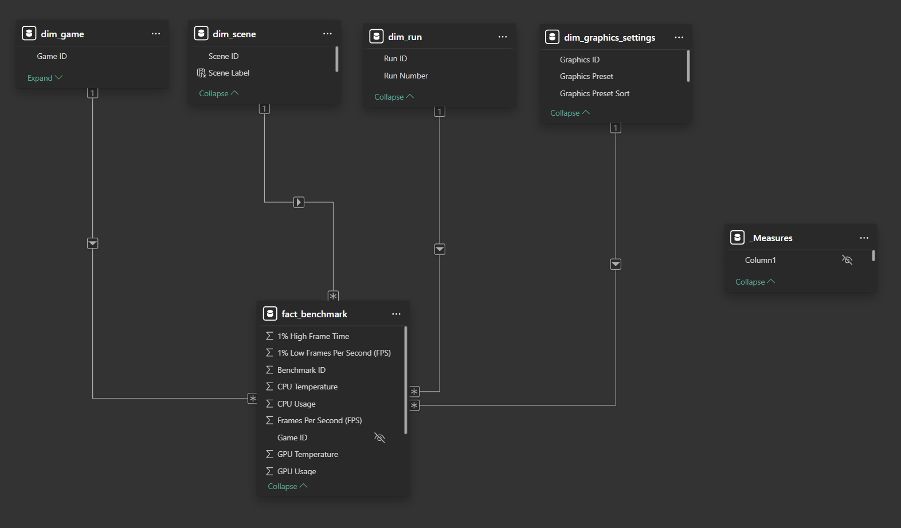

The Cost of
Visual Fidelity
This project evaluates the impact of graphics presets, HDR, and scene variation on game performance by tracking FPS, 1% lows, frame time, and thermals to identify optimal settings that maintain performance stability while maximizing visual fidelity.
Interactive Dashboard
Project Overview
This project evaluates how graphics presets, HDR, and scene type influence gaming performance and hardware behavior. Benchmark data collected from four games was used to analyze relationships between visual fidelity, FPS, 1% low FPS, frame-time stability, temperatures, and power consumption.
The goal is to determine whether increased visual quality introduces measurable performance instability and identify the point at which higher settings begin to degrade the gaming experience. This matters because PC players routinely balance image quality against smooth gameplay, yet these trade-offs are often based on subjective impressions rather than structured benchmarking.
Dataset
Benchmark data was collected using HWiNFO, which recorded hardware performance metrics during each benchmark run and exported the results as CSV files. A total of 72 CSV files were generated, representing four games tested across multiple HDR settings, graphics presets, scenes, and repeated runs.
After consolidation and preprocessing in Python, the final analytical dataset consisted of 72 observations, one row per benchmark test run, containing average values for framerate, frame-time stability, CPU and GPU utilization, temperatures, and power consumption.
This dataset served as the basis for a star schema model in MySQL, where benchmark measurements were stored in a fact table and linked to dimension tables describing games, graphics settings, scenes, and run numbers.
Tools & Technologies
- Python: Data consolidation, automation, and preprocessing
- SQL: Data modeling, transformation, and querying
- MySQL: Relational data storage and management
- Power BI: Dashboarding, DAX measures, and visualization
Methodology
- Data Collection: Enlisted HWiNFO software to capture performance metrics during benchmarking. Manual camera operation was required for two games without built-in benchmarking, with the other two games using built-in benchmarking. HWiNFO generated 72 total CSV files, 12 files per game with built-in benchmarking and 24 files per game without built-in benchmarking.
- Data Consolidation: Automated consolidation of 72 benchmark CSV files into a single dataset with one row per benchmark test run, reducing manual preprocessing and enabling scalable performance comparisons.
- Data Cleaning & Validation: Removed duplicate records, checked for null values, validated numeric values, and trimmed hidden spaces and other whitespace.
- Database Design: Designed a star schema model using fact and dimension tables to reduce redundancy and support scalable performance analysis.
- SQL Transformation & Analysis: Used joins, aggregations, and window functions to connect hardware, graphics settings, and benchmark results for comparative analysis.
- Dashboard Development: Built an interactive Power BI dashboard with slicers, DAX measures, KPI cards, and graphics preset comparisons to explore gaming performance trends across settings.
- Insight Generation: Analyzed benchmark trends to compare hardware performance across games, scenes, and graphics settings and identify meaningful performance tradeoffs.

Key Findings
Black Myth Wukong
- GPU Temperature: roughly the same for all data points, regardless of graphics preset and HDR, despite all reaching the performance instability threshold.
- CPU Temperature: stable for all data points.
- Performance: though lower presets yield higher FPS, all data points exceeded the smoothness threshold for both average FPS and 1% low FPS, regardless of graphics preset and HDR.
- Frame Time: the high preset was the only configuration to surpass the smoothness threshold for 1% high frame time, though only slightly.
Recommendation: relative to the lower presets, the high preset presents no issues for GPU temperature, CPU temperature, FPS, or 1% low FPS, while frame time only slightly reaches the point of potential performance instability. For these reasons, the High preset is the best choice for anyone who wants the highest visual fidelity while retaining performance stability. For anyone who prefers performance to have no possibility of being compromised, the Medium preset may be the better option.
Cyberpunk 2077
- GPU Temperature: only the low preset is predictably stable, while medium and high presets reach the point of potential performance instability.
- CPU Temperature: stable for all data points.
- Performance: though lower presets yield higher FPS, the high preset remains above the smoothness threshold (60 FPS), regardless of HDR. Additionally, 1% low FPS remains above the smoothness threshold for all presets and HDR configurations.
- Frame Time: smoothness is maintained for the low and medium presets, while the high preset reaches the point of potential performance instability.
Recommendation: while GPU temperature for the medium and high presets indicates potential performance instability, actual instability must be evaluated through FPS, 1% low FPS, and 1% high frame time. The Medium preset remains stable across every metric. While FPS and 1% low FPS remain stable for the High preset, 1% high frame time breaches the smoothness threshold by 7.8%. For anyone who values visual fidelity, the High preset may still be worth trying, as some people are less sensitive to performance than others and the instability introduced by 1% high frame time may not even be detectable. However, anyone who is highly sensitive to small, rare graphical stutters may prefer the Medium preset.
Kingdom Come: Deliverance II
- GPU Temperature: stable and constant at 70 °C for all data points.
- CPU Temperature: stable for all data points.
- Performance: though lower presets yield higher FPS, the high preset remains above the smoothness threshold (60 FPS), regardless of HDR and scene type. Additionally, 1% low FPS remains above the smoothness threshold for all graphics presets, HDR configurations, and scene types.
- Frame Time: smoothness is maintained for all graphics presets.
Recommendation: since no metric indicates performance instability, the High preset with HDR enabled is the best choice. Kingdom Come: Deliverance II is not a competitive game that requires the highest FPS possible, so the best balance of visual fidelity and performance is the High preset. Interestingly, bright scenes consistently demonstrated better performance than dark scenes.
Resident Evil Requiem
- GPU Temperature: stable and constant at 72 °C for all data points.
- CPU Temperature: stable for all data points.
- Performance: though lower presets yield higher FPS, the high preset remains above 60 FPS, regardless of graphics preset, HDR, and scene type. Similarly, 1% low FPS remains above 60 FPS across all configurations.
- Frame Time: smoothness is maintained for all graphics presets.
Recommendation: the high graphics preset meets all stability thresholds and is therefore recommended. Dark scenes show higher FPS and 1% low FPS, along with lower 1% high frame time, compared to bright scenes. Considering that most of the game takes place in dark environments, these conditions may be better optimized than bright scenes. Additionally, for all graphics presets except low, the difference in FPS becomes more noticeable between bright and dark scenes when HDR is enabled. Despite this, HDR does not introduce performance instability; for this reason, HDR is recommended for its wider color palette.
Limitations
- All data were collected from the same machine and therefore limit any insights from being extrapolated to other machines. A more robust analysis would require multiple computers with different component configurations (CPU, GPU, RAM, SSD). It's also possible that a given computer's performance is not representative of another computer with the same component configuration. For this reason, the GPU and CPU were evaluated by Cinebench, an application which tests rendering speeds. The GPU and CPU achieved scores of 70787 and 3161 points, respectively. These scores fall within expected performance ranges for these components and therefore do not present a problem for the analysis.
- Another limitation presented itself during the data collection process: few games have built-in benchmarking tools. The benefit of built-in benchmarking is that the camera navigates through the game world automatically, rendering the camera as a constant instead of a variable. This protects the integrity of the analysis from confounding variables. Without built-in benchmarking, the in-game camera must be controlled manually, providing a source of unwanted variability. This analysis uses data collected from both built-in benchmarking and manual benchmarking, depending on the game. It would have been more favorable to collect only data from built-in benchmarking to avoid introducing an additional variable into the analysis.
- The total number of games included could have been larger, but the data collection process was time-intensive. Additionally, more variables would have enabled a deeper analysis. For example, how do upscaling technologies like DLSS and FSR impact framerate and graphical stuttering? Is Unreal Engine 5 a problematic game engine with inferior performance and an over-reliance on upscaling? Are modern games more CPU-intensive than older ones? Insights into these questions would have been possible with more variables.